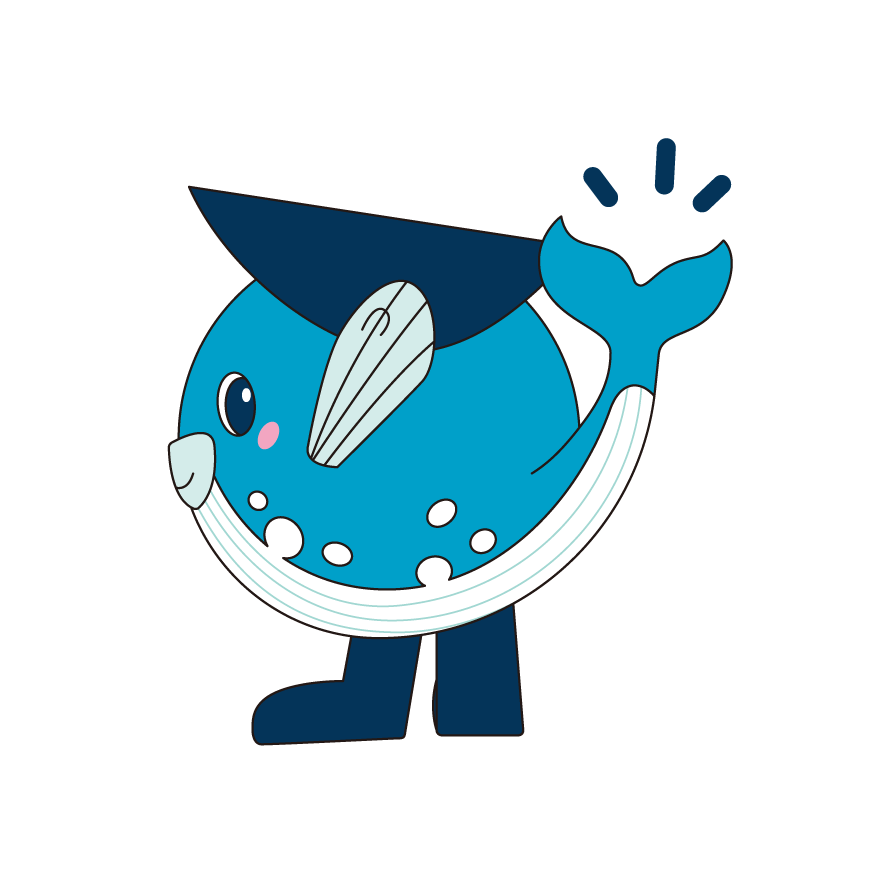

STEP 1
あなたをサポートする支援制度
- 大都市から
- 住まい・空き家
- 子育て・結婚
- 移住前に

STEP 2よくある質問で解決
東京から移住するとお金がもらえると聞きました。
東京23区に在住または通勤していた方が下関市へ移住し、要件を満たす場合、単身60万円、世帯100万円の「移住支援金」が支給される可能性があります。
※受給を約束するものではなく、詳細は要綱でご確認ください。
移住前に下関の暮らしを体験できますか？
2泊3日から4泊5日まで、宿泊料無料で利用できる「お試し暮らし」制度がございます（40歳未満の方が１人でも含まれる世帯が対象）。
申請書類はLiveHUBしものせきに持っていけば申請完了ですか？
いいえ、LiveHUBしものせきにご提出いただいても申請完了にはなりません。申請書は市役所・県庁へご提出ください。
ただし、YY！ターン支援交通費補助の実施報告書は LiveHUBしものせきにご提出ください。
STEP 3
あなたに合う制度を診断
窓口へご相談いただく前に、以下のナビで「どの制度の対象になるか」をご確認ください。
▶︎ 診断ナビを使っても解決しなかった方・具体的な相談に進む方はこちら
【重要】LiveHUBしものせきでのご相談をご希望の方は、
必ず「診断ナビの判定結果」を控えたうえでご連絡ください。